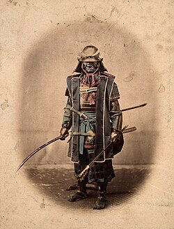

"The Ghosts of War"
(The Battle of Tsuhima)

I have died once already.
In flame.
In the scream of steel against flesh.
In the silence that followed your last breath.
The world turned to ash —
and I with it.
My name, forgotten.
My honor, buried beneath defeat.
My soul, scorched black.
But from that ruin,
a fire remained.
Not warm —
no…
the fire that sears and screams.
The fire that remembers.
I rose —
not as who I was,
but as what I must become.
A shadow with a heartbeat.
A blade with a purpose.
I do not seek justice.
Justice is for the living.
I seek balance —
a promise sealed in blood.
Vengeance is not hate.
It is duty.
It is the path that leads through hell
and ends in peace —
not for me,
but for the ghosts I carry.
I will not rest
until the chain breaks,
and the wind sings
not of mourning,
but of freedom.
Then,
and only then,
shall I lay down the sword
and join you
beyond the flames.
Author: Yvan Pogi